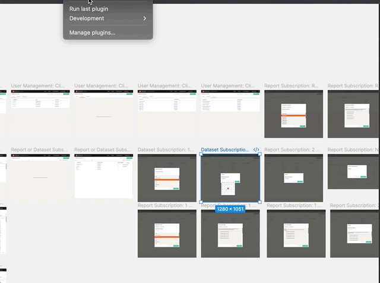
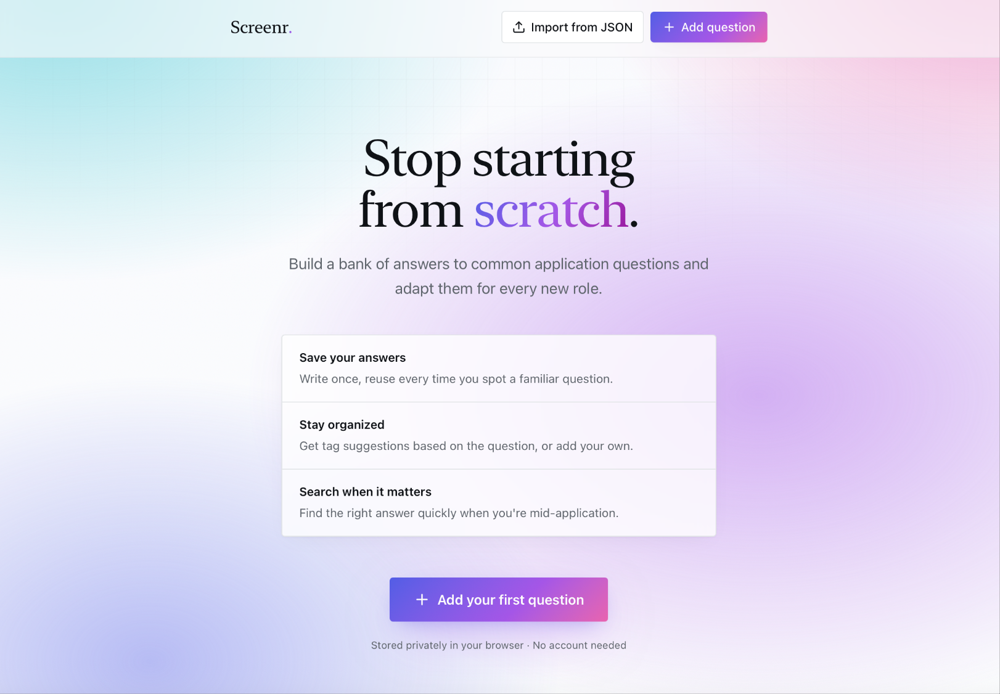

Figma Token Extractor Plugin

Extracting design tokens from existing files is tedious work. This Figma plugin lets you select frames and export Tokens Studio-compatible JSON in one step, without manually hunting through components or guessing at values.
Built with Claude and VS Code using the Figma Plugin API.
Screenr Jobseeker Answer Bank

Screenr is a private answer bank for saving and reusing responses to supplemental application questions. Add a question, write your answer, tag it by topic, and find it again in seconds. Data stays in your browser, no account required.
Built with Lovable and Claude.
screenr.tiffanyokeeffe.com ↗Community Calendar

The after-school activity schedule at my child's school lived on a piece of paper pinned to the Hort Rezeption wall. After a PTA conversation confirmed I wasn't the only parent struggling to find this information, I built a two-sided platform: a parent-facing discovery and registration flow, and an admin panel for coordinators to manage listings. The school confirmed the problem was known and a website revamp was already being planned.
Built with Lovable and open for others to fork and adapt for their own Hort/Ergänzende Förderung und Betreuung or community programs.
community-calendar.tiffanyokeeffe.com ↗